<!DOCTYPE html>
<html>
  <head>
    <meta charset="utf-8">
    <meta name="viewport" content="initial-scale=1, maximum-scale=1, user-scalable=no, width=device-width">
    <title>Subaru</title>


    <!-- compiled css output -->
    <link href="css/ionic.app.css" rel="stylesheet">

    <!-- ionic/angularjs js -->
    <script src="lib/ionic/js/ionic.bundle.js"></script>
    <script src="js/moment.min.js"></script>
    <script src="js/angular-moment.min.js"></script>
    <script src="lib/ngCordova/dist/ng-cordova.js"></script> 
  
    <!-- cordova script (this will be a 404 during development) -->
    <script src="cordova.js"></script>

    <!-- your app's js -->
    <script src="js/padzero.js"></script>
    <script src="js/localstorage.js"></script>
    <script src="js/app.js"></script>
  </head>
  <body ng-app="subaru" ng-strict-di="">
    <ion-nav-view>
    </ion-nav-view>

    <script id="home.html" type="text/ng-template">
      <ion-view>
        <ion-content>
          <div class="home bg">
            <div class="row">
              <div class="col-6">
                <div class="home-txt"></div>
              </div><!--.col-6-->
              <div class="col-6">
                <a class="play-btn" ng-click="main.changePage('video')">
                </a>
              </div><!--.col-6-->
            </div>  
          </div>
        </ion-content>
      </ion-view>
    </script>

    <script id="video.html" type="text/ng-template">
      <ion-view cache-view="false">
        <ion-content>
          <div class="video bg">
            <a class="close" ng-click="video.changePage('begin')">
              <i class="ion-close-round"></i>
            </a><!--.close-->
            <video id="intro" webkit-playsinline="webkit-playsinline" class="videoPlayer">
              <source ng-src="{{video.videoIntro}}" type="video/mp4"/>
            </video>
            <a class="play" ng-click="video.play()" ng-show="video.showPlayButton">
              <i class="ion-play"></i>
            </a><!--.play-->
          </div><!--.video-->

        </ion-content>
      </ion-view>
    </script>
    
    <script id="begin.html" type="text/ng-template">
      <ion-view>
        <ion-content>
          <div class="begin bg">
            <a class="back" ng-click="begin.back('home')">
              <i class="ion-arrow-left-c"></i>
            </a><!--.close-->
            <button class="begin" on-tap="begin.verifyTime()"></button>
          </div><!--.begin-->
        </ion-content>
      </ion-view>
    </script>

    <script id="sending.html" type="text/ng-template">
      <ion-view>
        <ion-content>
          <div class="sending bg">
            <div class="timer" ng-hide="sn.loading || sn.finished">
              <p class="countdown" >
              {{sn.countdown.hour | prependZero}}:{{sn.countdown.minute | prependZero}}:{{sn.countdown.second | prependZero}}
              </p>
              <div class="thank-you" ng-show="sn.finished">
                <h3 on-double-tap="sn.reset()">Gracias por participar en la Experiencia Subaru!</h3>
              </div 
            </div><!--.timer-->
          </div><!--.sending-->
        </ion-content>
      </ion-view>
    </script>

    <script id="tryagain.html" type="text/ng-template">
      <ion-view>
        <ion-content>
          <div class="tryagain bg">
            <a class="back" ng-click="tryagain.back('begin')">
              <i class="ion-arrow-left-c"></i>
            </a><!--.close-->
            
          </div><!--.tryagain-->
        </ion-content>
      </ion-view>
    </script>

  </body>
</html>
